Shortest distance from a point to a function
1.1 Problem setup
We want the point on the curve $y = f(x)$ closest to a given point $(x_0, y_0)$, for $f(x) = x^2 + 5$ and the points $(0,0)$, $(-4,0)$, $(-8,0)$, $(2,0)$ and $(6,0)$.
$D(x)$ is the squared length of the segment from $(x_0, y_0)$ to the point $(x, f(x))$ on the curve. Since $d \ge 0$ and $\sqrt{\cdot}$ is increasing, the $x$ that minimizes $D$ also minimizes $d$, and $D$ is easier to differentiate. At the minimum the segment is perpendicular to the curve's tangent.
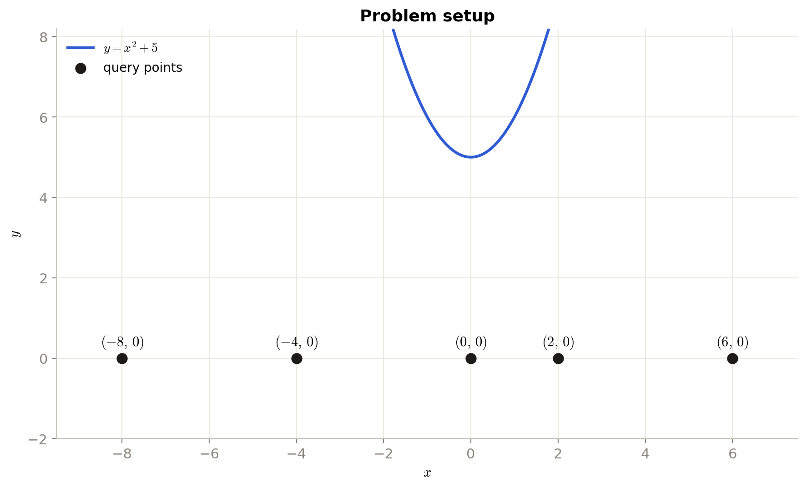
Analytical
Solve $D'(x) = 0$ in closed form.
Newton–Raphson
Follow the tangent of $D'$ to its root.
Golden section
Shrink a bracket around the minimum.
1.2 Analytical solution
For $f(x) = x^2 + 5$ and $y_0 = 0$, the condition is a cubic in $x$. For $(0, 0)$ it factors as $x(2x^2 + 11) = 0$, and since $2x^2 + 11 > 0$ the only root is $x = 0$. For the other points I divided by 2 to get $x^3 + px + q = 0$ with $p = \tfrac{11}{2}$, $q = -\tfrac{x_0}{2}$, and used Cardano's formula:
Because $p > 0$, each cubic has exactly one real root, so that critical point is the minimum. Plugging $x^*$ back into $d$ gives:
| Point | x* | Closest point | d |
|---|---|---|---|
| (0, 0) | 0 | (0, 5) | 5 |
| (−4, 0) | −0.356 | (−0.356, 5.126) | 6.290 |
| (−8, 0) | −0.672 | (−0.672, 5.452) | 9.133 |
| (2, 0) | 0.181 | (0.181, 5.033) | 5.351 |
| (6, 0) | 0.520 | (0.520, 5.270) | 7.603 |
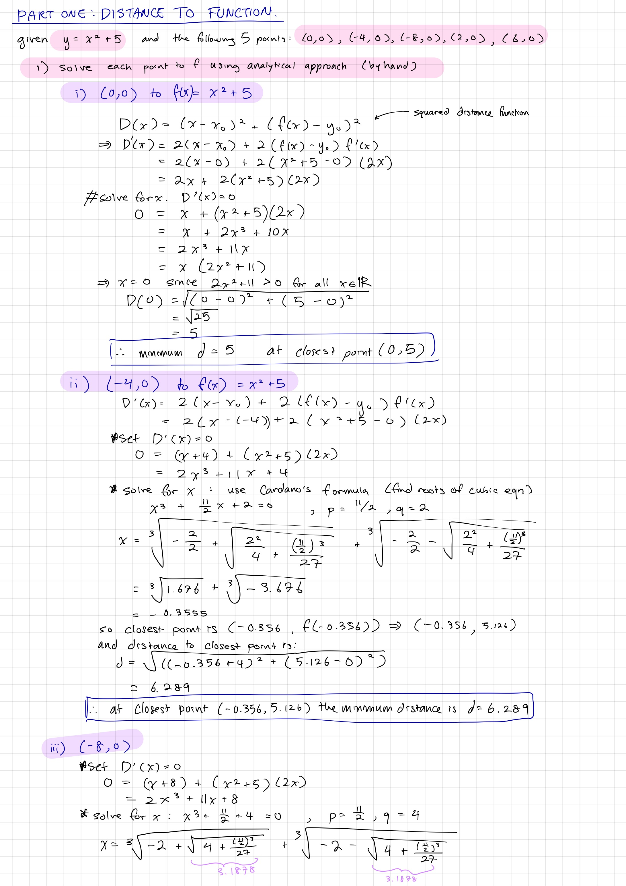
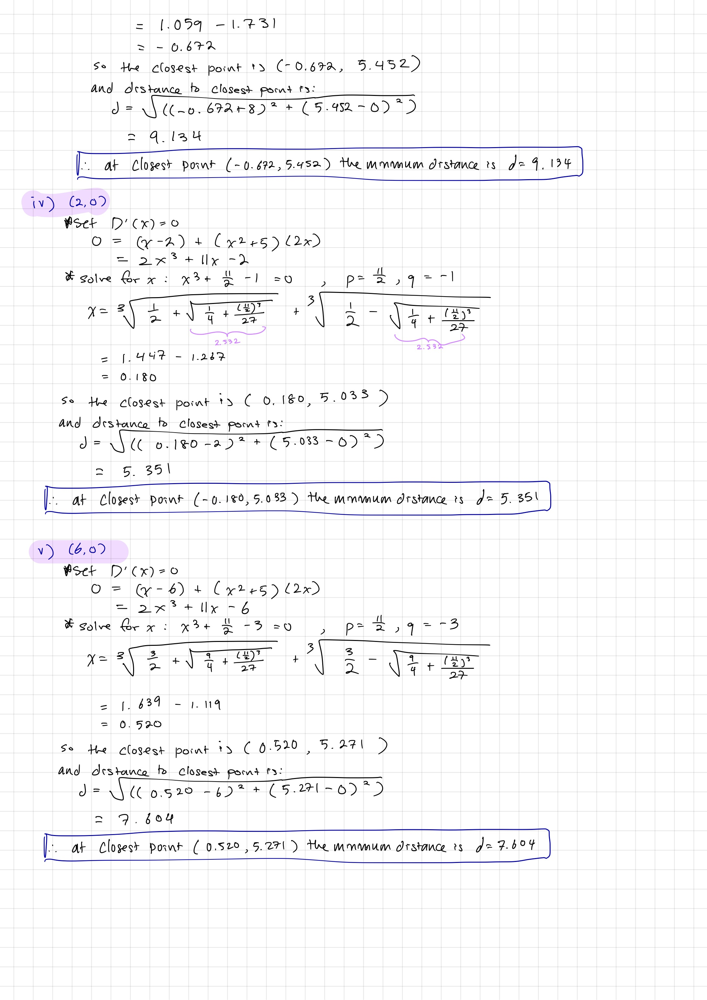
1.3 Newton–Raphson by hand
Newton–Raphson finds roots, so it is applied to $D'(x)$: the minimum of $D$ is where $D' = 0$. Each step replaces $D'$ with its tangent line at $x_n$ and jumps to where that line is zero. Here $D'(x) = 2(2x^3 + 11x - x_0)$ and $D''(x) = 2(6x^2 + 11) > 0$, so $D$ is convex and the root is the minimum.
I started from the vertex, $x = 0$. For $(0, 0)$ I started at $x = 1$, since $0$ is already the answer. I did two iterations per point, tracking $|x_{n+1} - x_n|$ against the tolerance. After two steps every point agrees with the analytical answer to 2–3 decimals; the code continues until the step is below $10^{-7}$.
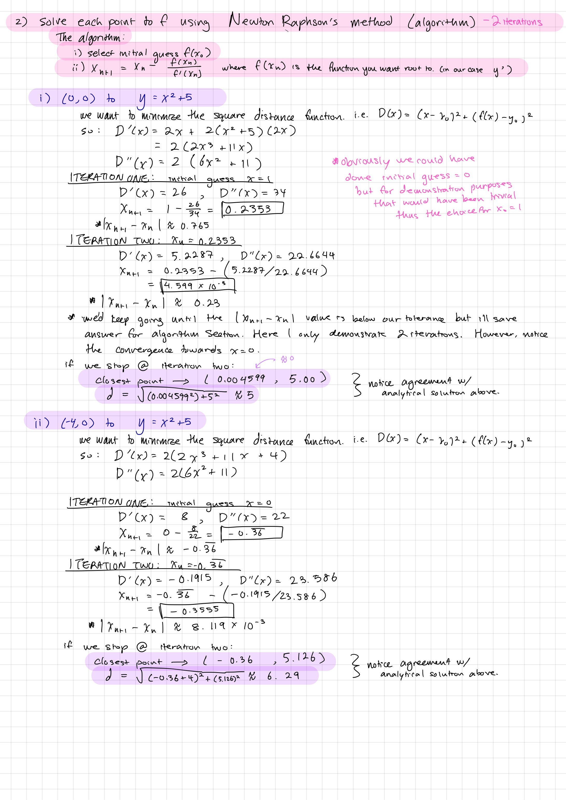
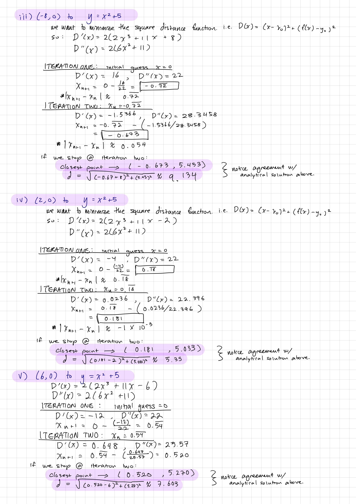
1.4 Golden section search by hand
Golden section search only compares values of $D(x)$, so it needs no derivatives. It keeps a bracket $[a, b]$ that contains the minimum and evaluates $D$ at two interior points, 38.2% and 61.8% of the way across. The minimum cannot lie beyond the interior point with the larger $D$, so that end of the bracket is discarded. The bracket shrinks by a factor of 0.618 each step, and one interior point is reused, so each step needs only one new evaluation.
To pick the starting bracket I tabulated $D(x)$ between the vertex and the point and kept the interval around the smallest value. For example, for $(-4, 0)$: $D(0) = 41$, $D(-0.5) = 39.81$, $D(-1) = 45$, so $[-1, 0]$. For $(0, 0)$ I used $[-1, 1]$; because it is symmetric, the first comparison is a tie and either half can be kept. After two iterations the estimate is the midpoint of the bracket.
In my hand calculations I labelled the two interior points the other way round from the standard formula above:
Since $0.618 = \varphi - 1 = 1 - (2 - \varphi)$, these are the same two points, at 38.2% and 61.8% of the bracket, with $x_1$ and $x_2$ swapped. In my notation $x_1$ is the right point, so the rule reads: if $D(x_1) > D(x_2)$, discard $x > x_1$; otherwise discard $x < x_2$. The brackets and results are identical to the standard version.
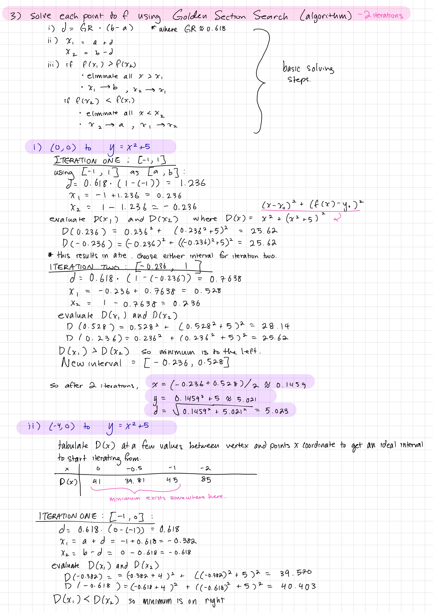
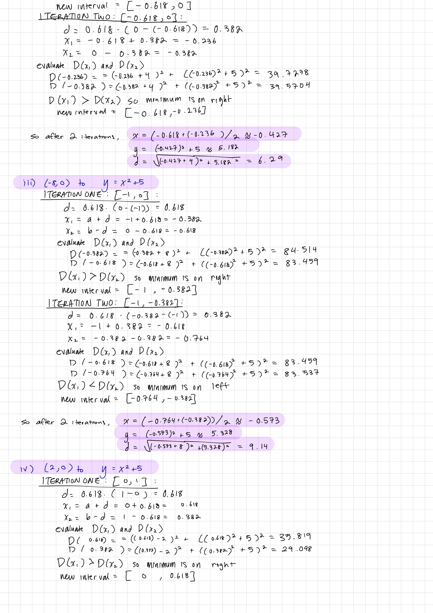
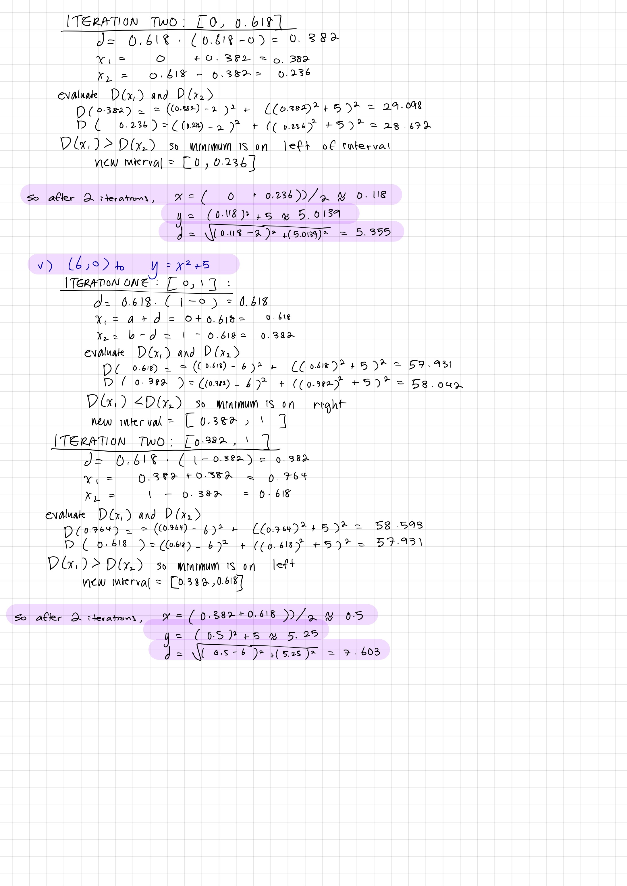
Newton–Raphson and golden section in Python
1.5 Code
distance.py contains the handout's two solvers, changed only to also return their
steps. It also has choose_bracket, which samples $D(x)$ and brackets the lowest
sample (the same idea as the hand tabulation), and the driver. plots.py only
draws. Run python distance.py from A1/code/ for every case on this
page, or python distance.py a b c x0 y0 for any parabola
$y = ax^2 + bx + c$ and point. Plots are saved to A1/media/.
distance.py: solvers & driver Python
"""
SYDE 572 Assignment 1, Part 1: shortest distance from a point (x0, y0) to a curve y = f(x).
find_distance_newton() and golden_section_search() are the handout's algorithms,
changed only to also return their steps for plotting.
python distance.py # assignment parabola + other functions
python distance.py a b c x0 y0 # any parabola y = ax^2 + bx + c and point
Plots are saved to ../media/
"""
import math
import os
import sys
import numpy as np
import plots
MEDIA = os.path.join(os.path.dirname(os.path.abspath(__file__)), "..", "media")
def find_distance_newton(x0, y0, f, df, ddf, initial_guess=0.0, tolerance=1e-7, max_iter=100):
x = initial_guess
history = [x]
for _ in range(max_iter):
D_prime = 2 * (x - x0) + 2 * (f(x) - y0) * df(x)
D_double_prime = 2 + 2 * df(x)**2 + 2 * (f(x) - y0) * ddf(x)
step = D_prime / D_double_prime
x -= step
history.append(x)
if abs(step) < tolerance:
break
return math.hypot(x - x0, f(x) - y0), x, history
def golden_section_search(x0, y0, f, a, b, tolerance=1e-7):
resphi = 2 - (1 + math.sqrt(5)) / 2
def dist_sq(x): return (x - x0)**2 + (f(x) - y0)**2
x1, x2 = a + resphi * (b - a), b - resphi * (b - a)
f_x1, f_x2 = dist_sq(x1), dist_sq(x2)
brackets = [(a, b)]
while abs(b - a) > tolerance:
if f_x1 < f_x2:
b, x2, f_x2 = x2, x1, f_x1
x1 = a + resphi * (b - a)
f_x1 = dist_sq(x1)
else:
a, x1, f_x1 = x1, x2, f_x2
x2 = b - resphi * (b - a)
f_x2 = dist_sq(x2)
brackets.append((a, b))
best_x = (a + b) / 2
return math.sqrt(dist_sq(best_x)), best_x, brackets
def choose_bracket(x0, y0, f, half_width=10, n=81):
"""Sample D(x) on [x0 - half_width, x0 + half_width] and bracket the lowest sample
with its two neighbours (the same idea as tabulating D(x) by hand)."""
grid = np.linspace(x0 - half_width, x0 + half_width, n)
i = int(np.nanargmin((grid - x0)**2 + (f(grid) - y0)**2))
return grid[max(i - 1, 0)], grid[min(i + 1, n - 1)]
def parabola(a, b, c):
"""f, f', f'' and a plot label for y = ax^2 + bx + c."""
terms = []
for coef, power in ((a, "x^2"), (b, "x"), (c, "")):
if coef:
num = "" if abs(coef) == 1 and power else f"{abs(coef):g}"
terms.append(("- " if coef < 0 else "+ ") + num + power)
label = " ".join(terms).replace("- ", "-", 1) if terms[0][0] == "-" else " ".join(terms)[2:]
return (lambda x: a * x**2 + b * x + c, lambda x: 2 * a * x + b, lambda x: 2 * a + 0 * x,
f"$y = {label}$")
def tag(x0, y0):
"""(-4, 0) -> 'm4_0' for file names."""
fmt = lambda v: (f"m{-v:g}" if v < 0 else f"{v:g}").replace(".", "p")
return f"{fmt(x0)}_{fmt(y0)}"
def solve_and_plot(name, f, df, ddf, eq, x0, y0, guess):
lo, hi = choose_bracket(x0, y0, f)
d_nr, x_nr, nr_hist = find_distance_newton(x0, y0, f, df, ddf, initial_guess=guess)
d_gs, x_gs, gs_hist = golden_section_search(x0, y0, f, lo, hi)
print(f"{eq.strip('$'):<22} ({x0:g}, {y0:g}) "
f"Newton x*={x_nr:.6f} d={d_nr:.6f} ({len(nr_hist) - 1} it, start {guess:g}) "
f"Golden x*={x_gs:.6f} d={d_gs:.6f} ({len(gs_hist) - 1} it, [{lo:g}, {hi:g}])")
plots.plot_newton(f, x0, y0, nr_hist, eq, os.path.join(MEDIA, f"nr_{name}{tag(x0, y0)}.png"))
plots.plot_golden(f, x0, y0, gs_hist, eq, os.path.join(MEDIA, f"gss_{name}{tag(x0, y0)}.png"))
return x_nr, nr_hist, gs_hist
# Other curves: (file prefix, f, f', f'', label, point, Newton start)
OTHER = [
("parab2_", *parabola(0.5, -2, 1), (5, -2), 2.0),
("exp_", np.exp, np.exp, np.exp, "$y = e^x$", (2, 1), 0.0),
("log_", np.log, lambda x: 1 / x, lambda x: -1 / x**2, r"$y = \ln x$", (0, 0), 1.0),
("rational_", lambda x: 4 / (1 + x**2), lambda x: -8 * x / (1 + x**2)**2,
lambda x: (24 * x**2 - 8) / (1 + x**2)**3, r"$y = \dfrac{4}{1 + x^2}$", (3, 3), 2.0),
("sqrt_", np.sqrt, lambda x: 0.5 / np.sqrt(x), lambda x: -0.25 * x**-1.5, r"$y = \sqrt{x}$", (4, 0), 4.0),
]
if __name__ == "__main__":
np.seterr(invalid="ignore", divide="ignore") # ln x and sqrt x are undefined for x <= 0 on plot grids
os.makedirs(MEDIA, exist_ok=True)
plots.setup_style()
if len(sys.argv) == 6:
a, b, c, x0, y0 = map(float, sys.argv[1:])
vertex = -b / (2 * a)
solve_and_plot("custom_", *parabola(a, b, c), x0, y0, vertex + 1 if x0 == vertex else vertex)
sys.exit()
# Assignment: y = x^2 + 5. Newton starts at the vertex x = 0, except for (0, 0)
# where that is already the answer, so it starts at x = 1 (same as the hand work).
f, df, ddf, eq = parabola(1, 0, 5)
points = [(0, 0), (-4, 0), (-8, 0), (2, 0), (6, 0)]
x_stars, nr_all, gs_all = [], {}, {}
for x0, y0 in points:
x_nr, nr_hist, gs_hist = solve_and_plot("", f, df, ddf, eq, x0, y0, 1.0 if x0 == 0 else 0.0)
x_stars.append(x_nr)
nr_all[f"({x0}, {y0})"], gs_all[f"({x0}, {y0})"] = nr_hist, gs_hist
plots.plot_setup(f, points, eq, os.path.join(MEDIA, "p1_setup.png"))
plots.plot_all_results(f, points, x_stars, eq, os.path.join(MEDIA, "p1_all_results.png"))
plots.plot_convergence(nr_all, gs_all, os.path.join(MEDIA, "p1_convergence.png"))
for name, f, df, ddf, eq, (x0, y0), guess in OTHER:
solve_and_plot(name, f, df, ddf, eq, x0, y0, guess)
plots.py: plotting helpers Python
"""
Plotting helpers for SYDE 572 Assignment 1. These only draw: the solvers in
distance.py and fitting.py pass in the steps they recorded.
"""
import numpy as np
import matplotlib.pyplot as plt
from matplotlib.ticker import MaxNLocator
CURVE = "#2f5bd3" # the function / the exact answer
POINT = "#1c1b19" # query points, data points, final answer
MUTED = "#8a877f" # guides and secondary text
ITER_CMAP = "Oranges" # iterates: light (early) -> dark (late)
def setup_style():
plt.rcParams.update({
"figure.facecolor": "white",
"savefig.facecolor": "white",
"font.size": 11,
"axes.titlesize": 13,
"axes.titleweight": "semibold",
"axes.edgecolor": "#c9c6bd",
"axes.linewidth": 0.8,
"axes.spines.top": False,
"axes.spines.right": False,
"axes.grid": True,
"grid.color": "#ebe9e3",
"xtick.color": MUTED,
"ytick.color": MUTED,
"legend.frameon": False,
"legend.fontsize": 10,
"mathtext.fontset": "cm",
})
def _iter_colors(n):
cmap = plt.get_cmap(ITER_CMAP)
return [cmap(v) for v in np.linspace(0.35, 0.95, max(n, 1))]
def _save(fig, fname, title):
fig.suptitle(title, fontsize=15, fontweight="semibold", y=1.0)
fig.tight_layout()
fig.savefig(fname, dpi=200, bbox_inches="tight")
plt.close(fig)
# ==================================================================
# Part 1: distance from a point to a curve
# ==================================================================
def _dist_sq(f, x0, y0):
return lambda x: (x - x0) ** 2 + (f(x) - y0) ** 2
def _num_deriv(g, x, h=1e-5):
"""Central difference, used only to draw tangent lines."""
return (g(x + h) - g(x - h)) / (2 * h)
def _result_box(ax, f, x0, y0, x_star):
y_star = f(x_star)
d = np.hypot(x_star - x0, y_star - y0)
ax.text(0.5, -0.30, f"closest point ({x_star:.4f}, {y_star:.4f}) shortest distance d = {d:.4f}",
transform=ax.transAxes, ha="center", va="top", fontsize=10, family="monospace",
bbox=dict(boxstyle="round,pad=0.5", fc="white", ec="#dcd9d0"))
def _curve_panel(ax, f, x0, y0, xs, eq, pad=1.5):
"""Curve and query point, framed around the point and the given x values."""
xs = np.asarray(xs, float)
lo, hi = min(x0, xs.min()) - pad, max(x0, xs.max()) + pad
ys = np.append(f(xs), y0)
ylo, yhi = ys.min() - pad, ys.max() + pad
grid = np.linspace(lo, hi, 800)
yg = f(grid)
yg = np.where((yg > yhi + 5 * pad) | (yg < ylo - 5 * pad), np.nan, yg)
ax.plot(grid, yg, color=CURVE, lw=2.2, label=eq, zorder=2)
ax.scatter([x0], [y0], s=70, color=POINT, zorder=6, label=f"point $({x0:g},\\,{y0:g})$")
ax.annotate(f"$({x0:g},\\,{y0:g})$", (x0, y0), xytext=(8, -16), textcoords="offset points")
ax.set_xlim(lo, hi)
ax.set_ylim(ylo, yhi)
ax.set_xlabel("$x$")
ax.set_ylabel("$y$")
ax.set_aspect("equal", adjustable="box") # so the shortest segment looks perpendicular
def plot_newton(f, x0, y0, nr_xs, eq, fname, max_labels=6):
"""Left: segment from the point to the curve at each iterate x_n.
Right: D'(x) and the tangent used at each step; it crosses zero at the next iterate."""
nr_xs = np.asarray(nr_xs, float)
Dp = lambda x: _num_deriv(_dist_sq(f, x0, y0), x)
cols = _iter_colors(len(nr_xs))
fig, (axL, axR) = plt.subplots(1, 2, figsize=(13, 5.2), gridspec_kw={"width_ratios": [1.1, 1]})
_curve_panel(axL, f, x0, y0, nr_xs, eq)
last = np.inf
for n, (x, c) in enumerate(zip(nr_xs, cols)):
final = n == len(nr_xs) - 1
axL.plot([x0, x], [y0, f(x)], ls="-" if final else "--", lw=2.2 if final else 1.2,
color=POINT if final else c, zorder=3)
axL.scatter([x], [f(x)], s=46, color=c, edgecolor="white", lw=1.2, zorder=5)
if n < max_labels and abs(x - last) > 0.08 * np.ptp(axL.get_xlim()):
last = x
axL.annotate(f"$x_{{{n}}}$", (x, f(x)), xytext=(6, 6), textcoords="offset points", color="#6b3a12")
axL.scatter([], [], color=cols[len(cols) // 2], label="iterates $x_n$ (light → dark)")
axL.set_title(f"Iterates on the curve ({len(nr_xs) - 1} steps)")
axL.legend(loc="upper center", bbox_to_anchor=(0.5, -0.12), ncol=3, fontsize=9)
_result_box(axL, f, x0, y0, nr_xs[-1])
span = max(np.ptp(nr_xs), 0.2)
grid = np.linspace(nr_xs.min() - 0.35 * span, nr_xs.max() + 0.35 * span, 600)
axR.plot(grid, Dp(grid), color=CURVE, lw=2.2, label="$D'(x)$")
axR.axhline(0, color=MUTED, lw=1)
last = np.inf
for n in range(len(nr_xs) - 1):
x, c = nr_xs[n], cols[n]
seg = np.array([x, nr_xs[n + 1]])
axR.plot(seg, Dp(x) + _num_deriv(Dp, x) * (seg - x), color=c, lw=1.4, ls="--")
axR.plot([x, x], [0, Dp(x)], color=c, lw=0.9, ls=":")
axR.scatter([x], [Dp(x)], s=40, color=c, edgecolor="white", lw=1, zorder=5)
if n < max_labels and abs(x - last) > 0.06 * span and abs(x - nr_xs[-1]) > 0.06 * span:
last = x
axR.annotate(f"$x_{{{n}}}$", (x, 0), xytext=(0, -16), textcoords="offset points",
ha="center", color="#6b3a12")
axR.scatter([nr_xs[-1]], [0], s=70, marker="*", color=POINT, zorder=6,
label=f"root $x^* \\approx {nr_xs[-1]:.4f}$")
axR.plot([], [], color=cols[0], ls="--", label="tangent at $x_n$")
axR.set_xlabel("$x$")
axR.set_ylabel("$D'(x)$")
axR.set_title(r"Each step: follow the tangent of $D'$ to zero")
axR.legend(loc="upper left")
_save(fig, fname, f"Shortest distance from $({x0:g},\\,{y0:g})$ to {eq}")
def plot_golden(f, x0, y0, brackets, eq, fname, n_show=8):
"""Left: search interval on the curve. Middle: D(x) with the first n_show brackets
stacked underneath. Right: bracket width per iteration (x0.618 each step)."""
D = _dist_sq(f, x0, y0)
a0, b0 = brackets[0]
x_star = sum(brackets[-1]) / 2
shown = brackets[:n_show]
cols = _iter_colors(len(shown))
fig, (axL, axM, axR) = plt.subplots(1, 3, figsize=(16, 5.2), gridspec_kw={"width_ratios": [1, 1.15, 0.85]})
_curve_panel(axL, f, x0, y0, [a0, b0], eq, pad=1.0)
axL.plot([x0, x_star], [y0, f(x_star)], color=POINT, lw=2.2, zorder=3)
axL.scatter([x_star], [f(x_star)], s=60, color=POINT, marker="*", zorder=6)
axL.axvspan(a0, b0, color=cols[0], alpha=0.18, lw=0, label=f"initial bracket [{a0:.3g}, {b0:.3g}]")
axL.set_title("Search interval on the curve")
axL.legend(loc="upper center", bbox_to_anchor=(0.5, -0.12), ncol=2, fontsize=9)
_result_box(axL, f, x0, y0, x_star)
grid = np.linspace(a0, b0, 600)
Dg = D(grid)
axM.plot(grid, Dg, color=CURVE, lw=2.2)
h = np.ptp(Dg) or 1.0
step, base = 0.09 * h, Dg.min() - 0.12 * h
for n, ((a, b), c) in enumerate(zip(shown, cols)):
yb = base - n * step
axM.plot([a, b], [yb, yb], color=c, lw=5, solid_capstyle="round")
axM.text(b + 0.01 * (b0 - a0), yb, f" {n}", va="center", fontsize=9, color="#6b3a12")
for x in (a, b):
axM.plot([x, x], [yb, D(x)], color=c, lw=0.6, ls=":", alpha=0.7)
axM.axvline(x_star, color=POINT, lw=1, ls="--")
axM.annotate(f"$x^* \\approx {x_star:.4f}$", (x_star, Dg.max()), xytext=(6, -4), textcoords="offset points")
axM.set_ylim(base - (len(shown) + 0.5) * step, Dg.max() + 0.08 * h)
axM.set_xlabel("$x$")
axM.set_ylabel("$D(x) = (x - x_0)^2 + (f(x) - y_0)^2$")
axM.set_title(f"Bracket $[a, b]$ for the first {len(shown)} iterations")
widths = [b - a for a, b in brackets]
axR.semilogy(widths, color=CURVE, lw=2, marker="o", ms=4)
axR.set_xlabel("iteration")
axR.set_ylabel("bracket width $b - a$")
axR.set_title(f"Bracket width ({len(widths) - 1} steps, ×0.618 each)")
_save(fig, fname, f"Golden section search: $({x0:g},\\,{y0:g})$ to {eq}")
def plot_setup(f, points, eq, fname):
"""The curve and all query points, before solving anything."""
xs, ys = zip(*points)
lo, hi = min(xs) - 1.5, max(xs) + 1.5
ylo = min(ys) - 2
yhi = ylo + 0.6 * (hi - lo)
grid = np.linspace(lo, hi, 800)
fig, ax = plt.subplots(figsize=(9, 5.5))
ax.plot(grid, f(grid), color=CURVE, lw=2.2, label=eq)
ax.scatter(xs, ys, s=60, color=POINT, zorder=5, label="query points")
for px, py in points:
ax.annotate(f"$({px:g},\\,{py:g})$", (px, py), xytext=(0, 10), textcoords="offset points", ha="center")
ax.set_xlim(lo, hi)
ax.set_ylim(ylo, yhi)
ax.set_xlabel("$x$")
ax.set_ylabel("$y$")
ax.set_title("Problem setup")
ax.legend(loc="upper left")
fig.tight_layout()
fig.savefig(fname, dpi=200, bbox_inches="tight")
plt.close(fig)
def plot_all_results(f, points, x_stars, eq, fname):
"""Every point joined to its closest point on the curve."""
x_stars = np.asarray(x_stars, float)
xs = [p[0] for p in points] + list(x_stars)
lo, hi = min(xs) - 1.5, max(xs) + 1.5
ylo = min(min(p[1] for p in points), f(x_stars).min()) - 2
yhi = max(max(p[1] for p in points), f(x_stars).max()) + 3
grid = np.linspace(lo, hi, 800)
yg = f(grid)
fig, ax = plt.subplots(figsize=(10, 6))
ax.plot(grid, np.where(yg > yhi + 10, np.nan, yg), color=CURVE, lw=2.2, label=eq, zorder=2)
for (px, py), xs_ in zip(points, x_stars):
ys_ = f(xs_)
ax.plot([px, xs_], [py, ys_], color=POINT, lw=1.4, ls="--", zorder=3)
ax.scatter([px], [py], s=55, color=POINT, zorder=5)
ax.scatter([xs_], [ys_], s=55, color="white", edgecolor=POINT, lw=1.6, zorder=6)
ax.annotate(f"$({px:g},\\,{py:g})$\n$d={np.hypot(xs_ - px, ys_ - py):.3f}$", (px, py),
xytext=(0, -14), textcoords="offset points", ha="center", va="top", fontsize=10)
ax.scatter([], [], color=POINT, label="query point")
ax.scatter([], [], color="white", edgecolor=POINT, label="closest point on curve")
ax.set_xlim(lo, hi)
ax.set_ylim(ylo - 1.5, yhi)
ax.set_aspect("equal", adjustable="box")
ax.set_xlabel("$x$")
ax.set_ylabel("$y$")
ax.set_title("Shortest distance from each point to the curve")
ax.legend(loc="lower center", ncol=3)
fig.tight_layout()
fig.savefig(fname, dpi=200, bbox_inches="tight")
plt.close(fig)
def plot_convergence(nr_histories, gss_histories, fname):
"""Newton: |x_n - x*|. Golden section: the error bound (b - a)/2."""
fig, (axA, axB) = plt.subplots(1, 2, figsize=(13, 4.6), sharey=True)
cmap = plt.get_cmap("Blues")
n = max(len(nr_histories) - 1, 1)
for i, (label, xs) in enumerate(nr_histories.items()):
xs = np.asarray(xs, float)
axA.semilogy(np.maximum(np.abs(xs - xs[-1])[:-1], 1e-16), marker="o", ms=5, lw=1.8,
color=cmap(0.45 + 0.5 * i / n), label=label)
for i, (label, br) in enumerate(gss_histories.items()):
axB.semilogy([(b - a) / 2 for a, b in br], lw=1.8, color=cmap(0.45 + 0.5 * i / n), label=label)
axA.set_title("Newton–Raphson: $|x_n - x^*|$")
axB.set_title("Golden section: error bound $(b-a)/2$")
axA.xaxis.set_major_locator(MaxNLocator(integer=True))
for ax in (axA, axB):
ax.set_xlabel("iteration")
ax.legend(title="point", fontsize=9)
axA.set_ylabel("error in $x$")
_save(fig, fname, "Convergence speed")
# ==================================================================
# Part 2: least-squares fitting
# ==================================================================
def _poly_label(c):
terms = [f"{c[0]:.3f}"] + [f"{abs(v):.3f}" + ("x" if k == 1 else f"x^{k}") for k, v in enumerate(c) if k]
signs = [""] + [" - " if v < 0 else " + " for v in c[1:]]
return "$y = " + "".join(s + t for s, t in zip(signs, terms)) + "$"
def _poly(c, x):
return sum(ck * x ** k for k, ck in enumerate(c))
def plot_fit_steps(name, X, Y, mse, coord_path, newton_path, c_exact, fname, show=(0, 1, 2)):
"""
coord_path : parameters after every single-parameter update (one-at-a-time Newton)
newton_path : parameters after every full Newton step
Left : data with the fit after iterations `show` and the final fit.
Middle: line -> path over the MSE contours (c0, c1); parabola -> each parameter vs iteration.
Right : MSE - MSE* per iteration for both Newton variants.
"""
p = len(c_exact)
iters = coord_path[::p]
if len(coord_path) % p != 1:
iters = np.vstack([iters, coord_path[-1]])
mse_star = mse(c_exact)
fig, (axL, axM, axR) = plt.subplots(1, 3, figsize=(17, 5.4), gridspec_kw={"width_ratios": [1.1, 1, 1]})
# ---- left: fits over the data ----
xg = np.linspace(X.min() - 0.3, X.max() + 0.3, 300)
cols = _iter_colors(len(show))
for k, col in zip(show, cols):
axL.plot(xg, _poly(iters[k], xg), color=col, lw=1.6, ls="--",
label=f"iter {k}: MSE = {mse(iters[k]):.4f}")
axL.plot(xg, _poly(c_exact, xg), color=CURVE, lw=2.4,
label=f"final ({len(iters) - 1} iters): MSE = {mse(iters[-1]):.4f}")
axL.scatter(X, Y, s=60, color=POINT, zorder=5, label="data")
axL.set_xlabel("$x$")
axL.set_ylabel("$y$")
axL.set_title("Fit after each iteration")
axL.legend(loc="upper left", fontsize=9)
axL.text(0.98, 0.03, _poly_label(c_exact), transform=axL.transAxes, ha="right", fontsize=11, color=CURVE)
# ---- middle ----
if p == 2:
pts = np.vstack([coord_path, newton_path, c_exact])
span = np.ptp(pts, axis=0) + 0.6
g0 = np.linspace(pts[:, 0].min() - 0.2 * span[0], pts[:, 0].max() + 0.2 * span[0], 200)
g1 = np.linspace(pts[:, 1].min() - 0.2 * span[1], pts[:, 1].max() + 0.2 * span[1], 200)
C0, C1 = np.meshgrid(g0, g1)
Z = np.vectorize(lambda a, b: mse(np.array([a, b])))(C0, C1)
axM.contour(C0, C1, Z, levels=np.geomspace(mse_star * 1.01, Z.max(), 14), colors=MUTED, linewidths=0.6)
axM.plot(coord_path[:, 0], coord_path[:, 1], color=_iter_colors(3)[1], lw=1.6,
marker="o", ms=3.5, label="one parameter at a time")
for k in show[1:]:
axM.annotate(f"iter {k}", iters[k], xytext=(8, -4), textcoords="offset points", fontsize=9, color="#6b3a12")
axM.plot(newton_path[:, 0], newton_path[:, 1], color=CURVE, lw=2, ls="--", marker="s", ms=5,
label="full Newton (1 step)")
axM.scatter(*c_exact, s=160, marker="*", color=POINT, zorder=6, label=f"optimum ({c_exact[0]:.2f}, {c_exact[1]:.2f})")
axM.annotate("start", coord_path[0], xytext=(6, 6), textcoords="offset points", fontsize=9)
axM.set_xlabel("$c_0$ (intercept)")
axM.set_ylabel("$c_1$ (slope)")
axM.set_title("Path over the MSE contours")
axM.legend(loc="lower left", fontsize=9)
else:
its = np.arange(len(iters))
for j, col in enumerate(("#c2562f", "#2e7d4f", CURVE)):
axM.plot(its + 1, iters[:, j], color=col, lw=2, label=f"$c_{j}$")
axM.axhline(c_exact[j], color=col, lw=1, ls=":")
axM.text(len(its) * 1.05, c_exact[j], f"{c_exact[j]:.2f}", color=col, va="center", fontsize=10)
axM.set_xscale("log")
axM.set_xlabel("iteration + 1 (log scale)")
axM.set_ylabel("parameter value")
axM.set_title("Parameters, one at a time (dotted = exact)")
axM.legend(loc="upper right")
# ---- right: convergence ----
excess = lambda cs: np.maximum([mse(c) - mse_star for c in cs], 1e-16)
axR.semilogy(excess(iters), color=_iter_colors(3)[1], lw=2, label=f"one at a time ({len(iters) - 1} iters)")
axR.semilogy(excess(newton_path), color=CURVE, lw=2, ls="--", marker="s", ms=5, label="full Newton (1 step)")
axR.set_xlabel("iteration")
axR.set_ylabel("MSE − MSE*")
axR.set_title(f"Convergence to MSE* = {mse_star:.4f}")
axR.legend(loc="upper right")
_save(fig, fname, f"Fitting a {name}: Newton–Raphson intermediate steps")
def plot_final_fits(X, Y, fits, fname):
"""fits: list of (name, c, mse)."""
xg = np.linspace(X.min() - 0.3, X.max() + 0.3, 300)
fig, ax = plt.subplots(figsize=(9, 5.5))
for (name, c, m), col in zip(fits, ("#c2562f", CURVE)):
ax.plot(xg, _poly(c, xg), color=col, lw=2.2, label=f"{name}: {_poly_label(c)}, MSE = {m:.4f}")
for x, y in zip(X, Y):
ax.plot([x, x], [y, _poly(c, x)], color=col, lw=1, ls=":")
ax.scatter(X, Y, s=60, color=POINT, zorder=5, label="data")
ax.set_xlabel("$x$")
ax.set_ylabel("$y$")
ax.set_title("Least-squares line vs parabola (dotted = residuals)")
ax.legend(loc="upper left")
fig.tight_layout()
fig.savefig(fname, dpi=200, bbox_inches="tight")
plt.close(fig)
1.6 Newton–Raphson: intermediate steps
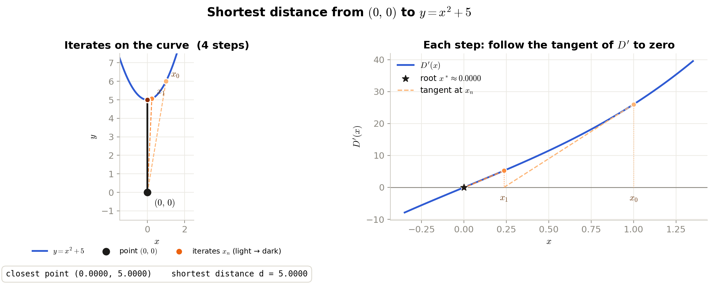
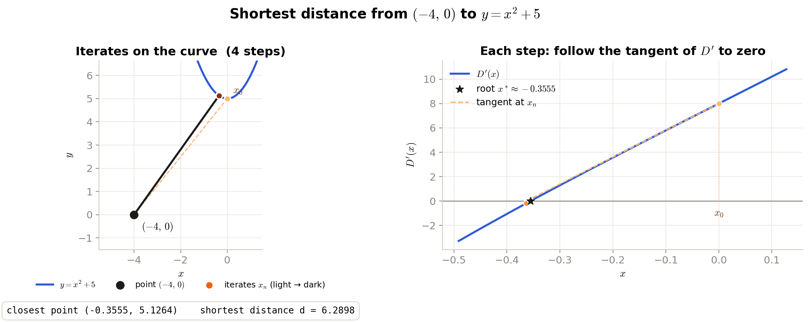
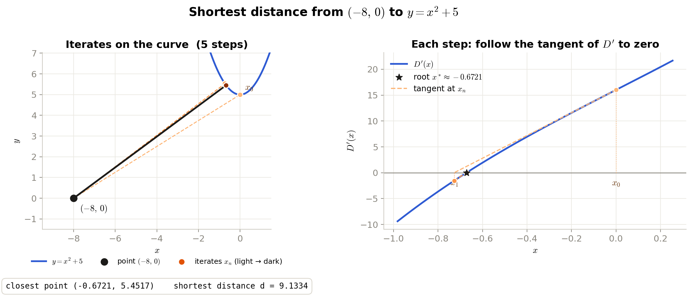
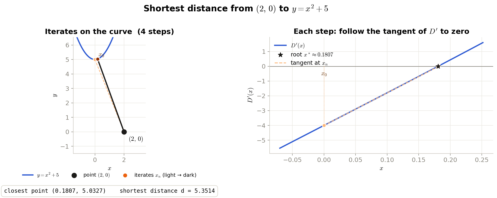
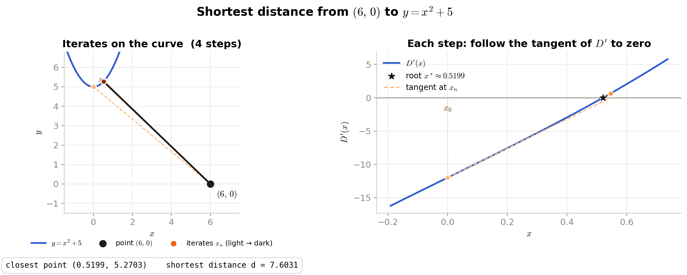
1.7 Golden section search: intermediate steps
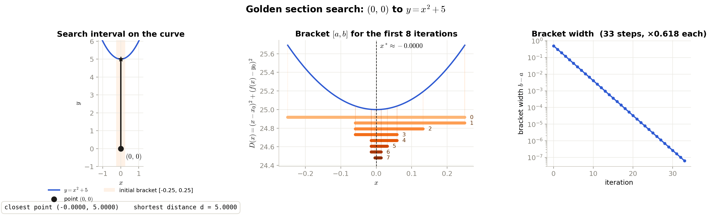
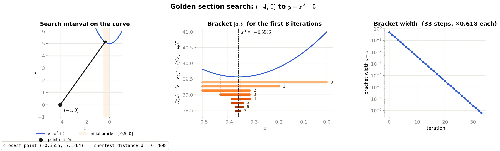
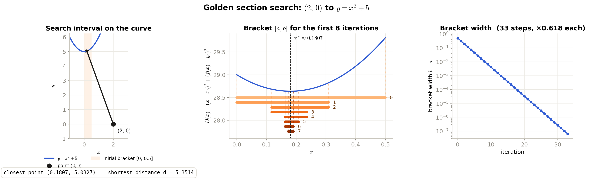
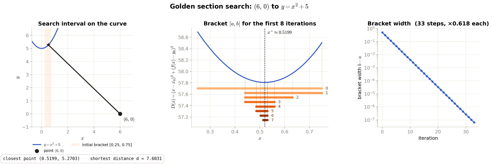
1.8 Results & comparison
Newton–Raphson starts at the vertex (or 1 unit away when the point is directly below it); golden section uses a bracket around the lowest sample of $D(x)$. Both stop at a tolerance of $10^{-7}$.
| Point | Analytical | Newton–Raphson | Golden section | |||||
|---|---|---|---|---|---|---|---|---|
| x* | d | x* | d | iters | x* | d | iters | |
| (0, 0) | 0.000000 | 5.000000 | 0.000000 | 5.000000 | 4 | 0.000000 | 5.000000 | 33 |
| (−4, 0) | −0.355470 | 6.289845 | −0.355470 | 6.289845 | 4 | −0.355470 | 6.289845 | 33 |
| (−8, 0) | −0.672078 | 9.133420 | −0.672078 | 9.133420 | 5 | −0.672078 | 9.133420 | 33 |
| (2, 0) | 0.180745 | 5.351396 | 0.180745 | 5.351396 | 4 | 0.180745 | 5.351396 | 33 |
| (6, 0) | 0.519904 | 7.603125 | 0.519904 | 7.603125 | 4 | 0.519904 | 7.603125 | 33 |
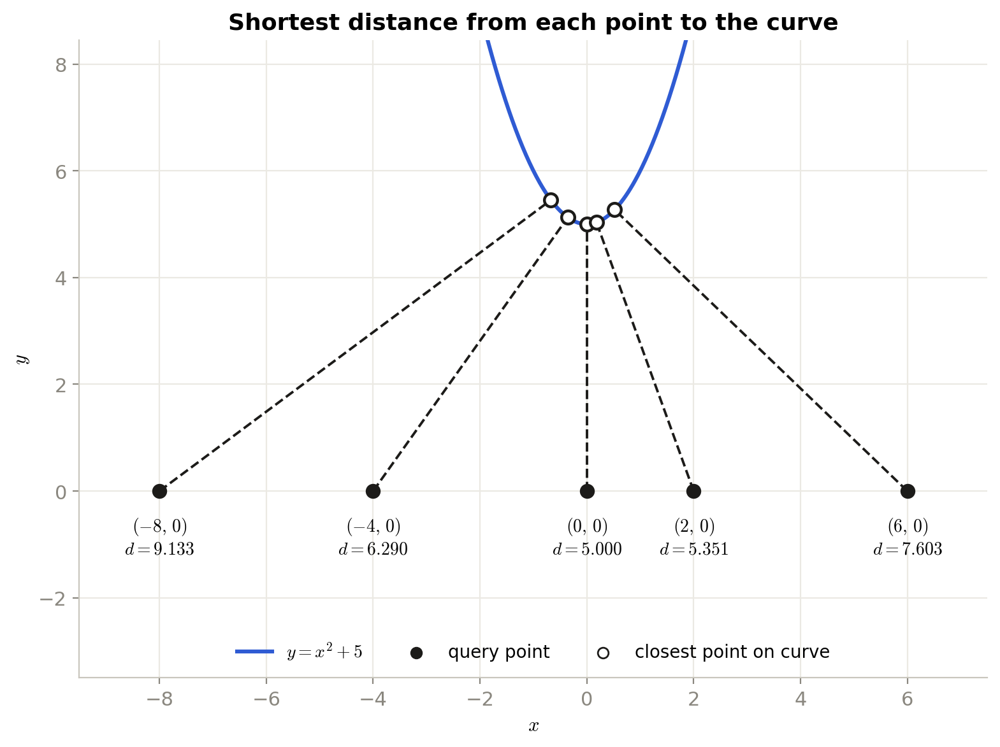
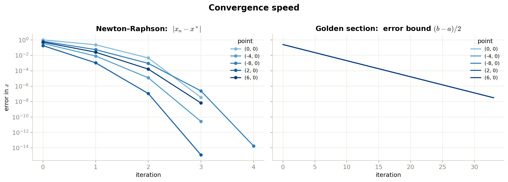
All three methods agree to six decimal places. The analytical method is exact, but only because $D'$ is a cubic with a closed-form root. Newton–Raphson needs $D'$ and $D''$ and a reasonable starting guess, but it converges quadratically: 4–5 iterations, with the number of correct digits roughly doubling each step. Golden section needs only $D(x)$ and a bracket containing one minimum. It always converges, but only linearly (×0.618 per step), so reaching $10^{-7}$ takes 33 iterations. Use Newton when derivatives are available and a good start is known; use golden section when they aren't, or when robustness matters more than speed.
1.9 Other functions & points
Nothing in the solvers is specific to parabolas. They only call $f$ (and $f'$, $f''$ for Newton), so supporting another curve just means passing different functions. The one change is in the plotting grids, where NaNs from $\ln x$ and $\sqrt{x}$ at $x \le 0$ are ignored. The golden section bracket is found the same way as before, by sampling $D(x)$ on $[x_0 - 10,\, x_0 + 10]$.
| Function | Point | Newton–Raphson | Golden section | ||||
|---|---|---|---|---|---|---|---|
| x* | d | iters | x* | d | iters | ||
| $y = 0.5x^2 - 2x + 1$ | (5, −2) | 3.134728 | 2.486228 | 6 | 3.134728 | 2.486228 | 33 |
| $y = e^x$ (exponential) | (2, 1) | 0.582871 | 1.623025 | 6 | 0.582871 | 1.623025 | 33 |
| $y = \ln x$ (logarithmic) | (0, 0) | 0.652919 | 0.779767 | 6 | 0.652919 | 0.779767 | 33 |
| $y = \frac{4}{1 + x^2}$ (rational) | (3, 3) | 1.000000 | 2.236068 | 7 | 1.000000 | 2.236068 | 33 |
| $y = \sqrt{x}$ (radical) | (4, 0) | 3.500000 | 1.936492 | 2 | 3.500000 | 1.936492 | 33 |
Two checks by hand. For $\sqrt{x}$ from $(4, 0)$, $D'(x) = 2(x - 4) + 1 = 0$ gives exactly $x = 3.5$, and $D'$ is linear, so Newton needs only one real step. For $\frac{4}{1+x^2}$ from $(3, 3)$, the answer $(1, 2)$ gives $d = \sqrt{5}$, and the tangent slope there, $-2$, is perpendicular to the segment $(2, 1)$.
On $y = \frac{4}{1 + x^2}$, Newton started from $x = 3$ or $x = 1.5$ does not converge within 100 iterations: the tangent steps on $D'$ overshoot back and forth. From $x = 2$ it converges in 7. Golden section has no starting guess to get wrong; it only needs a bracket.
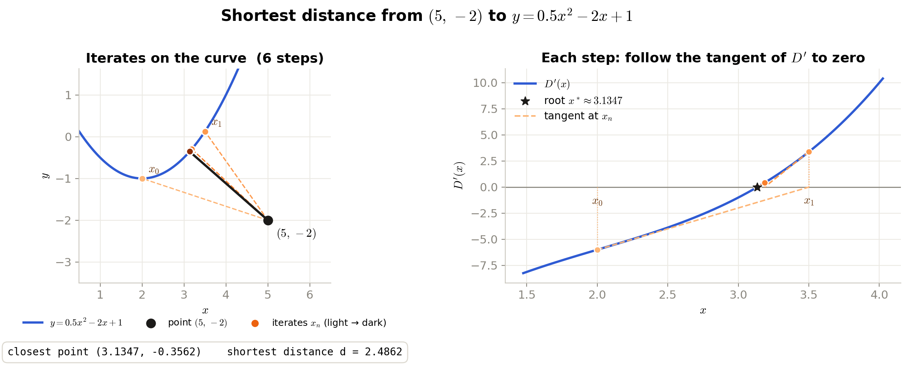
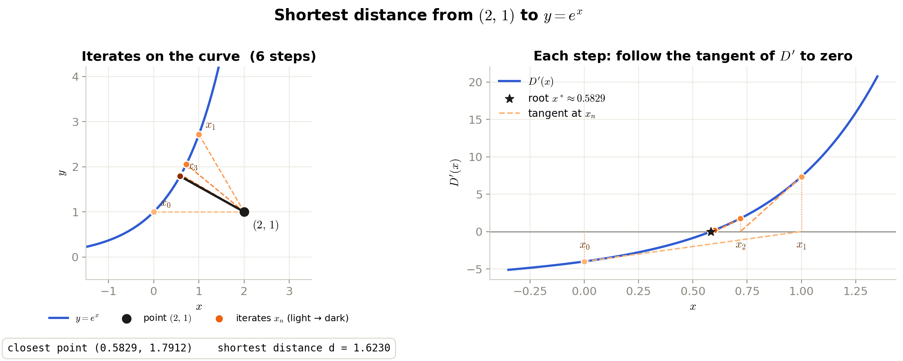
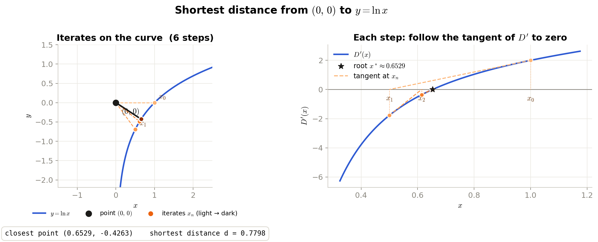
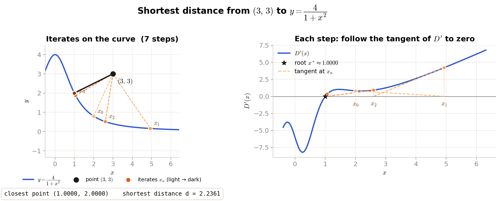
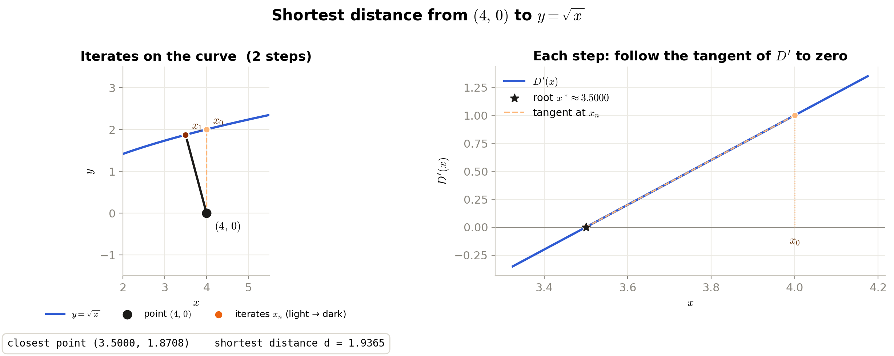
Golden section plots for these functions click to expand
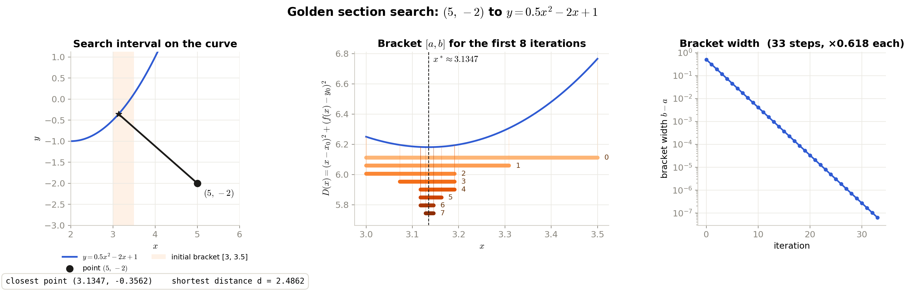
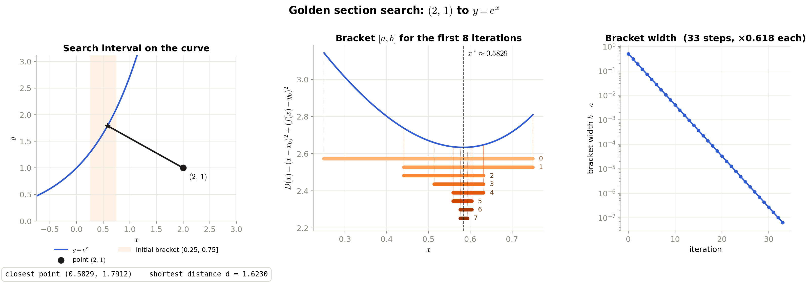
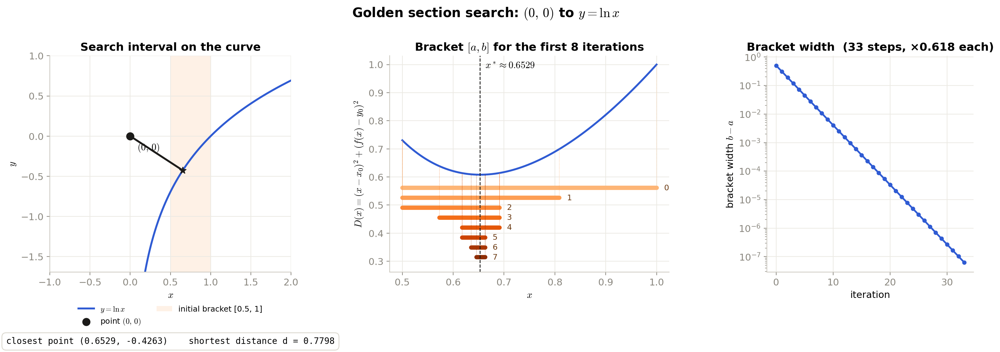
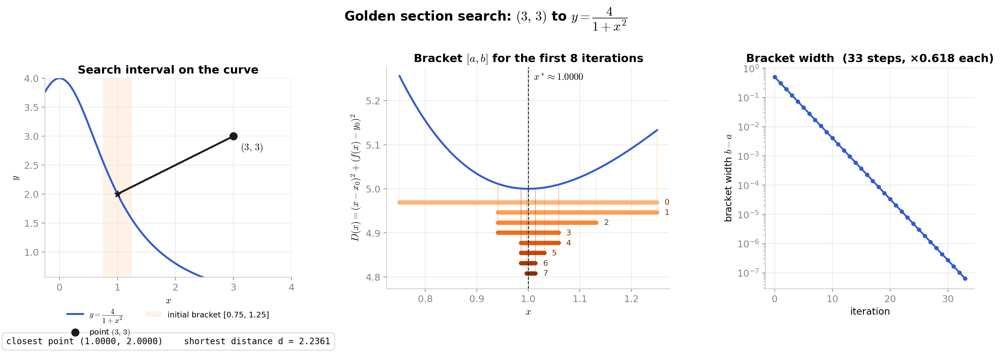
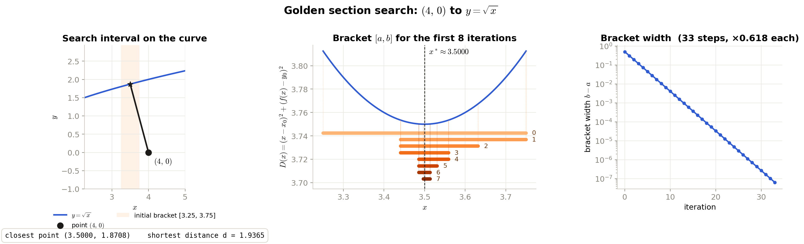
Fitting a line and a parabola
2.1 Data & the MSE objective
Data points: $(0,\,0.5)$, $(1,\,1.5)$, $(2,\,3.5)$, $(3,\,7.5)$. With error $e(x_i) = \hat{y}(x_i) - y_i$:
The hand work minimizes the squared error $\rho$; dividing by $N = 4$ gives the MSE and does not move the minimum. $\rho$ is quadratic in the parameters, so each partial derivative is linear and setting them to zero gives a linear system (the normal equations). Some gradient equations are written divided by 2 (e.g. $\partial\rho/\partial c_0 = 2(4c_0 + 6c_1 - 13)$). That doesn't change their roots or the Newton steps, which only use the ratio of first to second derivative.
2.2 Analytical solution
Line
Subtracting the second equation from 3 × the first gives $-10c_1 + 23 = 0$, so $c_1 = 2.3$ and then $c_0 = -0.2$. The best line is $\hat{y} = -0.2 + 2.3x$ with $\rho = 2.3$, so MSE = 0.575.
Parabola
I solved the three normal equations by Gauss–Jordan elimination on the augmented matrix, getting $c = (0.55,\, 0.05,\, 0.75)$. The best parabola is $\hat{y} = 0.55 + 0.05x + 0.75x^2$ with $\rho = 0.05$, so MSE = 0.0125.
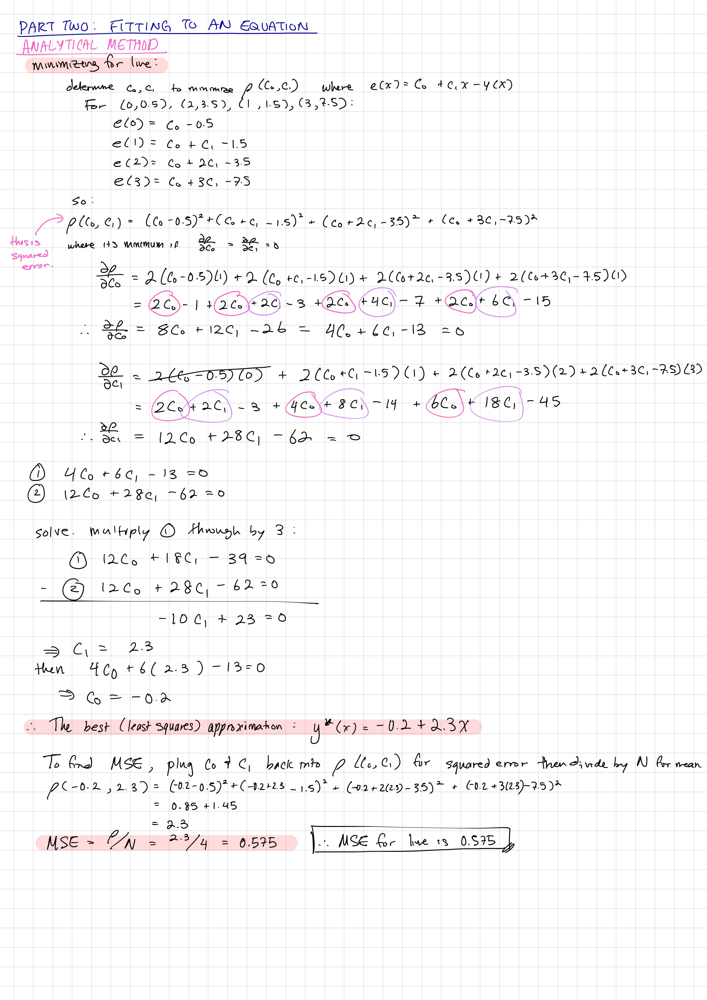
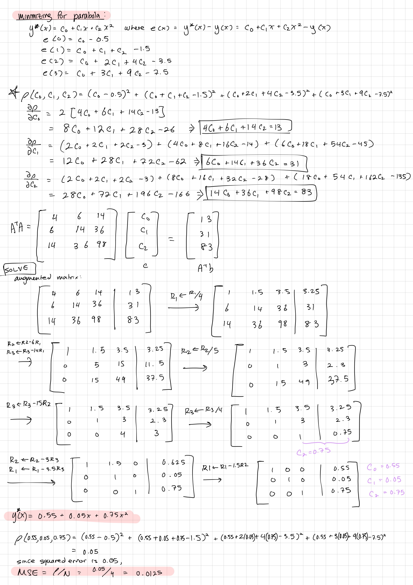
2.3 Newton–Raphson
One parameter at a time
Starting from $c_0 = 0.5,\ c_1 = 1$ (and $c_2 = 0$), MSE = 4.25. Each iteration takes one Newton step on one parameter, then uses the new value while stepping the next. Because $\rho$ is quadratic in each parameter, each step lands exactly on the best value of that parameter given the others.
- Line (order $c_1$, then $c_0$; curvatures 28 and 4). Iteration 1 gives $(c_0, c_1) = (0.25,\, 2)$, MSE 0.6875. Iteration 2 gives $(0.0893,\, 2.1071)$, MSE 0.6215.
- Parabola (order $c_1, c_2, c_0$; curvatures 14, 98, 4). Iteration 1 gives $(c_0, c_1, c_2) = (0.1072,\, 2,\, 0.0408)$, MSE 0.5548.
The MSE drops each iteration, but slowly, because the parameters are coupled: moving one changes the best value of the others. The code shows the full convergence.
Full multivariate Newton
- Line. Using the two gradient equations as written, $H = \begin{bmatrix} 4 & 6 \\ 12 & 28 \end{bmatrix}$ and $g(0.5, 1) = (-5, -28)$, so $H^{-1}g = (0.7, -1.3)$ and $c_1 = (-0.2,\, 2.3)$, MSE 0.575.
- Parabola. $H = A^\top A$ from above, $H^{-1} = \frac{1}{20}\begin{bmatrix} 19 & -21 & 5 \\ -21 & 49 & -15 \\ 5 & -15 & 5 \end{bmatrix}$ and $g(0.5, 1, 0) = (-5, -14, -40)$, so $H^{-1}g = (-0.05, 0.95, -0.75)$ and $c_1 = (0.55,\, 0.05,\, 0.75)$, MSE 0.0125.
In both cases the gradient at the new point is zero, so iteration 2 changes nothing. One step is enough because Newton fits a quadratic model, and $\rho$ is already exactly quadratic; the result is the same as the analytical solution.
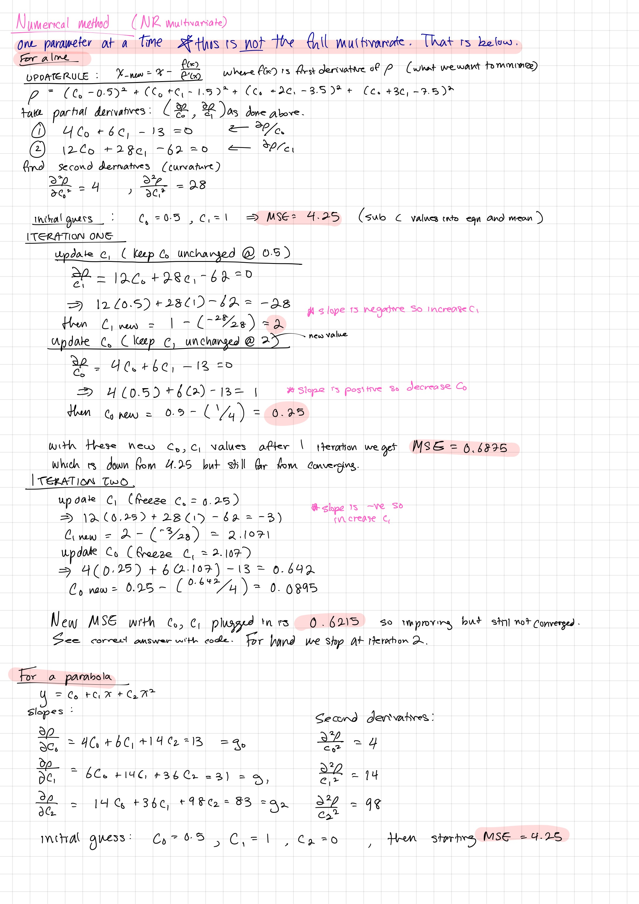
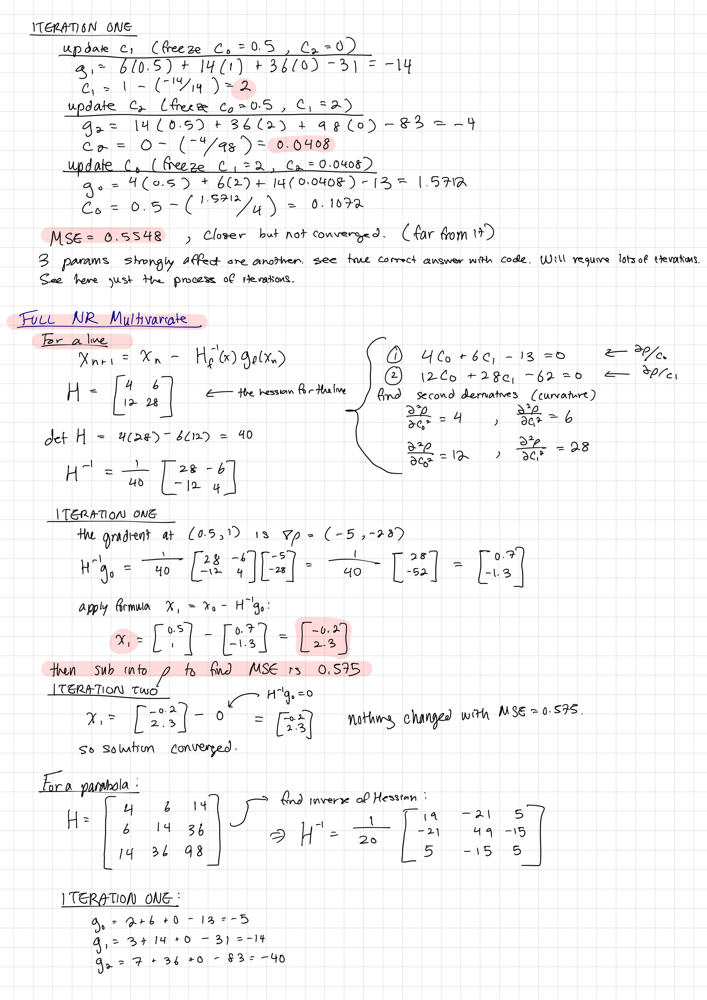
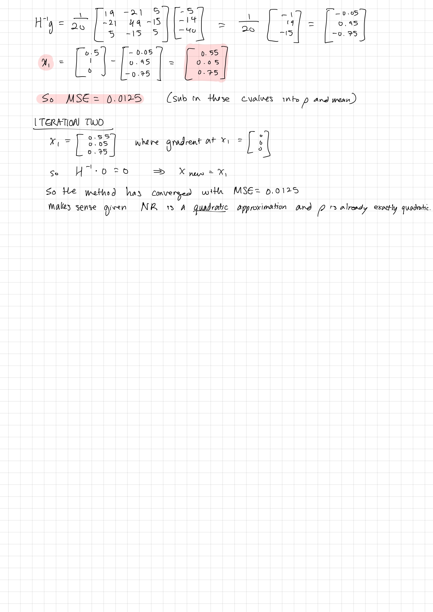
Automating the fit in Python
2.4 Code
fitting.py builds the design matrix $A$ with columns $1, x, x^2$, so that
$\hat{y} = Ac$. It then uses $\text{MSE} = \frac{1}{N}\lVert Ac - y\rVert^2$, gradient
$\frac{2}{N}A^\top(Ac - y)$ and Hessian $\frac{2}{N}A^\top A$. It solves:
- Analytically: the normal equations, by Gauss–Jordan elimination (the same row operations as by hand).
- Newton one parameter at a time: with the same start and update order as the hand work, until no parameter moves more than $10^{-10}$.
- Full multivariate Newton.
It prints the first two iterations so they can be checked against the hand work. Run
python fitting.py from A1/code/.
fitting.py Python
"""
SYDE 572 Assignment 1, Part 2: fit a line and a parabola to 4 points by minimizing the MSE.
analytical : solve the normal equations (A^T A) c = A^T y by Gauss-Jordan elimination
one at a time : Newton-Raphson on one parameter, the others frozen (the hand method)
full Newton : c <- c - H^-1 g on all parameters at once
python fitting.py (plots are saved to ../media/)
"""
import os
import numpy as np
import plots
MEDIA = os.path.join(os.path.dirname(os.path.abspath(__file__)), "..", "media")
X = np.array([0.0, 1.0, 2.0, 3.0])
Y = np.array([0.5, 1.5, 3.5, 7.5])
def design_matrix(x, degree):
"""Columns 1, x, x^2, ... so the model is y_hat = A @ c with c = [c0, c1, ...]."""
return np.vander(x, degree + 1, increasing=True)
def mse(A, y, c):
return np.mean((A @ c - y) ** 2)
def gradient(A, y, c):
return 2 / len(y) * A.T @ (A @ c - y)
def hessian(A):
return 2 / len(A) * A.T @ A # constant, because the MSE is quadratic in c
def gauss_jordan(M, b):
"""Solve M c = b with the same row operations as the hand work."""
M = np.column_stack([M, b]).astype(float)
for i in range(len(b)):
M[i] /= M[i, i]
for k in range(len(b)):
if k != i:
M[k] -= M[k, i] * M[i]
return M[:, -1]
def newton_one_at_a_time(A, y, c_start, order, tol=1e-10, max_iter=5000):
"""Each iteration updates the parameters in `order`, one at a time:
c_j <- c_j - g_j / H_jj with the others frozen. Returns every intermediate c."""
c = np.array(c_start, float)
H = hessian(A)
path = [c.copy()]
for _ in range(max_iter):
before = c.copy()
for j in order:
c[j] -= gradient(A, y, c)[j] / H[j, j]
path.append(c.copy())
if np.max(np.abs(c - before)) < tol:
break
return c, np.array(path)
def newton_full(A, y, c_start, tol=1e-10, max_iter=20):
c = np.array(c_start, float)
path = [c.copy()]
for _ in range(max_iter):
step = gauss_jordan(hessian(A), gradient(A, y, c))
c -= step
path.append(c.copy())
if np.max(np.abs(step)) < tol:
break
return c, np.array(path)
# (name, degree, starting guess, update order) -- same start and order as the hand work
MODELS = [
("line", 1, [0.5, 1.0], [1, 0]),
("parabola", 2, [0.5, 1.0, 0.0], [1, 2, 0]),
]
if __name__ == "__main__":
os.makedirs(MEDIA, exist_ok=True)
plots.setup_style()
finals = []
for name, degree, start, order in MODELS:
A = design_matrix(X, degree)
loss = lambda c, A=A: mse(A, Y, c)
c_exact = gauss_jordan(A.T @ A, A.T @ Y)
c_one, one_path = newton_one_at_a_time(A, Y, start, order)
c_full, full_path = newton_full(A, Y, start)
n_iters = (len(one_path) - 1) // len(order)
print(f"\n{name.upper()} (start {start}, MSE {loss(np.array(start)):.4f})")
print(f" analytical c = {np.round(c_exact, 6)} MSE = {loss(c_exact):.6f}")
for k in (1, 2):
c_k = one_path[k * len(order)]
print(f" one-at-a-time iter {k}: c = {np.round(c_k, 4)} MSE = {loss(c_k):.4f}")
print(f" one-at-a-time c = {np.round(c_one, 6)} MSE = {loss(c_one):.6f} ({n_iters} iterations)")
print(f" full Newton c = {np.round(c_full, 6)} MSE = {loss(c_full):.6f} ({len(full_path) - 2} step + 1 check)")
plots.plot_fit_steps(name, X, Y, loss, one_path, full_path, c_exact,
os.path.join(MEDIA, f"p2_{name}_steps.png"))
finals.append((name.capitalize(), c_exact, loss(c_exact)))
plots.plot_final_fits(X, Y, finals, os.path.join(MEDIA, "p2_final_fits.png"))
2.5 Intermediate steps
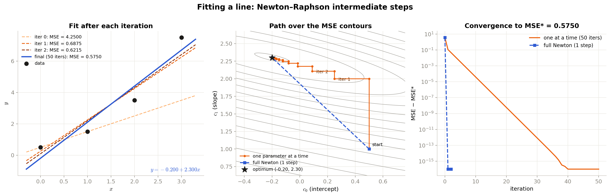
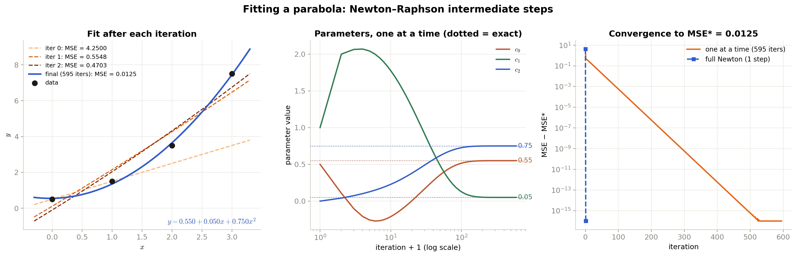
2.6 Results
| Model | Method | c0 | c1 | c2 | Iterations | MSE |
|---|---|---|---|---|---|---|
| Line | Analytical | −0.2 | 2.3 | — | — | 0.575 |
| Line | Newton, one at a time | −0.2 | 2.3 | — | 50 | 0.575 |
| Line | Newton, full | −0.2 | 2.3 | — | 1 | 0.575 |
| Parabola | Analytical | 0.55 | 0.05 | 0.75 | — | 0.0125 |
| Parabola | Newton, one at a time | 0.55 | 0.05 | 0.75 | 595 | 0.0125 |
| Parabola | Newton, full | 0.55 | 0.05 | 0.75 | 1 | 0.0125 |
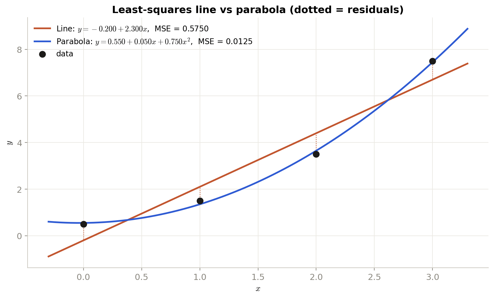
The MSE is 0.575 for the line and 0.0125 for the parabola. The parabola fits 46× better because the data curve upward: the line's residuals follow a pattern (points above the line at both ends, below it in the middle), which a straight line can't remove. Every method reaches the same parameters. Full Newton matches the analytical answer in one step because the MSE is exactly quadratic. One-at-a-time Newton converges only linearly, and more slowly the more coupled the parameters are: 50 iterations for the line, 595 for the parabola.
References & acknowledgements
- SYDE 572 Assignment 1 handout (Newton–Raphson and golden section search code).
- Cardano's formula for the real root of a depressed cubic $x^3 + px + q = 0$.
- Plots made with NumPy and Matplotlib.